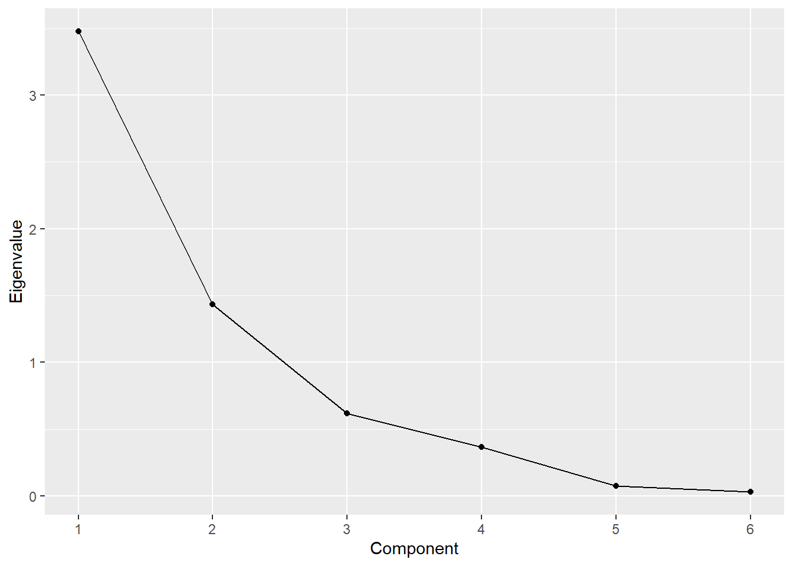

Topic 6 Positioning
6.1 R Packages and Datasets for Topic 5
library(ggplot2) # Advanced graphing capabilities
library(flextable) # Better HTML Tables
library(dplyr) # Easier programming
library(dendextend) # Nicer dendrograms
library(vtable) # Nicer tables
load("Topic06/ffattrib.rdata")6.2 Positioning Overview
6.2.1 The Concept of Positioning
- Positioning is not what you do to a product
- Positioning is what you do to the mind of the prospect
6.2.2 Position vs. Positioning
- Position The place a brand, product line, or organization in general occupies in consumers’ minds relative to competing offerings.
- Positioning Developing a specific marketing mix to influence potential customers’ overall perception of a brand, product line, or organization in general.
6.2.3 Difficulty of Positioning
- Positioning is easy when your product is clearly superior in an important way…
- But few are
- Most product markets have a lot of parity, so…
- Positioning is more important and more difficult
6.2.4 Competitive Market Structure
- Difficulty of positioning depends on level of product competitiveness
- Easy positioning…
- Product Superiority: Clearly superior in many important ways
- “In the middle” positioning…
- Product Differentiation: One or more specific features superior to the competition (but otherwise similar)
- Product Differentiation: One or more specific features superior to the competition (but otherwise similar)
- Difficult positioning…
- Product Parity: No essential differences from one product to another
- Easy positioning…
6.2.5 Positioning with Product Parity
- Remember… Positioning is what you do to the mind of the prospect
- Thus… Need to create points of difference, whether:
- They exist or not
- They are meaningful or not
6.2.6 Requirements for Effective Positioning
- Uniqueness
- Desirability
- Believability
Not all three are required… But the more there are, the more likely the positioning will be effective
6.2.6.1 Uniqueness
- Be different in some way
- Must get through the clutter
- Slightly better on an important feature
-vs.-
Unique on a less important feature
- Slightly better on an important feature
- More brands = more difficult
- Find a niche that is not yet occupied
6.2.6.2 Desirability
- Difference should be on something relatively important to the consumer
- Example: Is being clear in the cola market important?
- Don’t look for any gap in the market…
Look for gaps that turn prospects into buyers
6.2.6.3 Believability
- Claims of superiority must be accepted
- Believability rests on:
- How reasonable the claim is
- Objective support for the claim
- A common error is to strive for too many positions
6.2.7 Steps in Positioning
- Assess the positions occupied by competing products
- Determine the dimensions underlying these positions
- Choose a market position where efforts will have the greatest impact

6.2.8 Positioning Research Methods
6.2.8.1 Image Profile
- Average ratings of brands/products on a number of attributes
- Easy to create, but…
- Difficult to interpret

6.2.8.2 Quadrant Analysis
- x-axis contains the average ratings of one brand/product on a number of attributes
- y-axis contains the average importance of each attribute
- Easily shows what attributes to emphasize, but…
- Only looks at one brand/product at a time

6.2.8.3 Perceptual Maps
- Shows the location of competing brands/ products in a “virtual” space
- Enable marketers to see at a glance how own brand/product relates to the competition
6.2.8.3.1 Types of Perceptual Maps
- Discriminant Analysis Maps
- Based on identifying differences between objects with respect to several variables simultaneously
- Multidimensional Scaling Maps
- Based only on similarities between objects
- Factor Analysis Maps
- Based on the dimensions underlying a set of variables
- EMPHASIS OF THIS CLASS
6.3 Factor Analysis
- Generic term for identifying dimensions underlying a set of variables
- Finds uncorrelated linear dimensions that capture the most variance in the data
- Main types:
- exploratory factor analysis
- principal components analysis
6.4 Principal Components Analysis (PCA)
Recomputes a set of variables in terms of linear equations (components) that capture linear relationships in the data * First component captures as much variance as possible from all variables * Second component captures as much variance as possible that remains * Continue until as many components as variables * Analyst retains/analyzes a subset of components
6.4.1 PCA Process
- Determine number of factors to retain
- Rotate factors to aid interpretation
- Interpret factors
- Use results in further analysis (e.g., perceptual maps)
6.4.1.1 Step 1: Determine number of factors to retain
- How many factors?
- Eigenvalues > 1
- E.g., Keep two components, accounting for about 85% of variation
Component Eigenvalue Difference Proporation Cumulative 1 4.5562 1.5461 0.5062 0.5062 2 3.0100 2.4187 0.3344 0.8407 3 0.5913 0.2131 0.0657 0.9064 4 0.3782 0.1183 0.0420 0.9484 5 0.2599 0.1255 0.0289 0.9773 6 0.1344 0.0882 0.0149 0.9922 7 0.0463 0.0250 0.0051 0.9974 8 0.0213 0.0189 0.0024 0.9997 9 0.0024 NA 0.0003 1.0000 - Examine Scree Plot
- Sometimes called an elbow plot
- Look for bend or kink in the plot
- Number of components to retain is the number prior to that kink
- Eigenvalues > 1
6.4.1.2 Step 2: Rotate factors to aid interpretation
Factor loadings are the correlation between each variable and each factor
- Higher loadings indicate the variable is representative of the factor
Unfortunately, unrotated loadings may not provide a meaningful pattern to understand the factors
PC1
PC2
Unexplained
perform
0.3327
0.3073
0.3009
leader
0.3116
0.4276
0.0867
lattech
-0.3656
0.2875
0.2500
fun
-0.4010
-0.2957
0.1335
serious
0.2730
0.4499
0.1131
bargain
0.3722
-0.3160
0.1801
value
0.4229
-0.2843
0.0855
trendy
-0.3253
0.4117
0.0941
Rotating the factors redistributes the variance from earlier factors to later factors to make more meaningful patterns
Factor/component loading guidelines
\(\rho<0.4\Longrightarrow\) no loading
\(0.4\le \rho<0.6\Longrightarrow\) low" loading
\(\rho\ge0.6\Longrightarrow\) “high” loadingPC1
PC2
Unexplained
perform
0.0490
0.4502
0.3009
leader
-0.0459
0.5271
0.0867
lattech
-0.4645
-0.0234
0.2500
fun
-0.1081
-0.4864
0.1335
serious
-0.0897
0.5185
0.1131
bargain
0.4882
0.0062
0.1801
value
0.5057
0.0634
0.0855
trendy
-0.5157
0.0967
0.0941
6.4.1.3 Step 3: Interpret factors
- (not)\(lattech\), \(bargain\), \(value\), (not)\(trendy\) describe factor 1
- Might label factor 1 as “latest”
- \(perform\), \(leader\), (not)\(fun\), and \(serious\) describe factor 2
- Might label factor 2 as “performance”
PC1 PC2 Unexplained perform 0.0490 0.4502 0.3009 leader -0.0459 0.5271 0.0867 lattech -0.4645 -0.0234 0.2500 fun -0.1081 -0.4864 0.1335 serious -0.0897 0.5185 0.1131 bargain 0.4882 0.0062 0.1801 value 0.5057 0.0634 0.0855 trendy -0.5157 0.0967 0.0941
6.4.1.4 Step 4: Use results in further analysis
- Results could be used in linear regerssion, logistic regression, cluster analysis, perceptual mapping, etc.
6.5 Creating a Percptual Map using PCA
Steps:
- Map Brands
- Map Attributes
- Interpret Map
6.5.1 Map Brands
Using rotated loading matrix and average brand scores for each variable, obtain a score for each brand on each component
Attribute
Alpha’s Mean
Factor 1
Mean x Factor 1
Factor 2
Mean x Factor 2
perform
-1.2952
0.0490
-0.0635
0.4502
-0.5831
leader
-0.7840
-0.0459
0.0360
0.5271
-0.4133
lattech
0.5696
-0.4645
-0.2646
-0.0234
-0.0133
fun
1.0862
-0.1081
-0.1174
-0.4864
-0.5283
serious
-1.2024
-0.0897
0.1079
0.5185
-0.6234
bargain
0.3347
0.4882
0.1634
0.0062
0.0021
value
0.2434
0.5057
0.1231
0.0634
0.0154
trendy
-0.7042
-0.5157
0.3632
0.0967
-0.0681
-1.7519
-0.1810
0.3481
1.1523
-2.2120
Use factor scores for each brand as coordinates on the perceptual map
brand
scr1
scr2
Alpha
0.3480
-2.2120
Beta
-0.8181
3.1213
Delta
-1.9904
-1.5338
Eta
0.1985
-0.3866
Gamma
-0.7339
2.8111
Kappa
2.6707
0.7768
Lambda
3.4634
0.5167
Sigma
-2.0978
-0.8910
Theta
-1.3777
-0.4682
Zeta
0.3373
-1.7343
6.5.2 Map Attributes
- Factor loadings serve as the coordinates for the attributes
- Loadings often need to be scaled to be used on the same map as the brands

Figure 6.1: Loadings NOT Scaled

Figure 6.2: Loadings Scaled
6.5.3 Interpret Map
- Length of line represents amount of variance explained for that attribute
- Lines extend in opposite direction
- Perpendicular line from brand to attribute vector shows how brand is perceived on that attribute
- Further along the vector, the higher the association between that brand and attribute
- Distance between brands shows how similar the market perceives them to be
6.6 Joint-Space Maps
Perceptions vs. Preferences
Preferences are fundamentally different than perceptions
- Customers may perceive a brand as safe, but it may not be an determinant attribute
- Preferences may not change according to the magnitude of an attribute
Joint-space maps:
Incorporates perceptions and preferences into same map
Interpreted in a similar manner to attribute vectors
Preference “driven” by attributes vectors most parallel to preference vector
6.7 Positioning Example
6.7.1 Overview
Goal: Create a joint-space map of BGSU students perceptions and preferences of fast food restaurants
Attributes: All measured on 5-point scale
- Cleanliness(-), \(clean_neg\)
- Convenience, \(conv\)
- Healthy options, \(healthy\)
- Variety(-), \(variety_neg\)
- Value, \(value\)
- Taste, \(taste\)
6.7.2 Examine the Data
Mean (top table) and standard deviation (bottom table) for each restaurant for each attribute
- Nothing out of the ordinary
- Some attributes have more variation (\(conv\), \(healthy\), and \(taste\))
Table 6.1: Attribute Means (Top) and Standard Deviations (Bottom) (R code)
Table 6.1: rest clean_neg conv healthy variety_neg value taste Chipotle 2.02 3.85 3.9 2.65 3.8 4.25 Jimmy John's 2.05 3.88 3.7 2.7 3.45 3.55 McDonald's 2.83 4.33 1.98 2.27 3.75 2.92 Mr. Spots 2.48 2.95 2.6 2.67 3.25 3.67 Qdoba 2.15 2.98 3.58 2.55 3.2 3.42 Subway 2.45 3.52 4.17 2.23 3.4 3.65 Taco Bell 2.85 4.35 1.8 2.2 3.65 3.25 Wendy's 2.62 4.2 2.73 2.08 3.62 3.77 Table 6.1: rest clean_neg conv healthy variety_neg value taste Chipotle 0.947 1.1 0.982 1.08 1.16 1.1 Jimmy John's 0.904 1.24 1.07 1.09 1.15 1.24 McDonald's 1.03 0.859 0.891 1.01 1.17 1.16 Mr. Spots 0.816 1.18 0.778 0.971 1.01 0.971 Qdoba 0.864 1.1 0.931 0.932 1.07 1.2 Subway 1.04 1.18 1.06 1.05 1.03 1.12 Taco Bell 1.03 0.834 0.853 1.02 1.21 1.3 Wendy's 0.868 0.883 0.784 0.888 0.897 0.974 Correlation matrix of attributes
- Some variables have fairly high correlations with others
- \(taste\) and \(value\)
- \(clean_neg\) and \(healthy\)
- \(clean_neg\) and \(taste\)
Table 6.2: Attribute Correlation Matrix (R code)
clean_neg conv healthy variety_neg value taste clean_neg 1.0000 0.0209 -0.4050 0.2101 -0.2069 -0.3557 conv 0.0209 1.0000 -0.0486 -0.3334 0.1905 0.1310 healthy -0.4050 -0.0486 1.0000 -0.1391 0.1504 0.3336 variety_neg 0.2101 -0.3334 -0.1391 1.0000 -0.2872 -0.2159 value -0.2069 0.1905 0.1504 -0.2872 1.0000 0.4677 taste -0.3557 0.1310 0.3336 -0.2159 0.4677 1.0000- Some variables have fairly high correlations with others
6.7.3 How many factors
How many factors should be retained?
- Only the first two components have eigenvalues > 1, and they explain nearly 82% of the variation
- Thus, retaining two components seems appropriate
Table 6.3: Eigenvalue Table (R code)
Table 6.3: Component Eigenvalue Difference Proporation Cumulative 1 3.48 2.04 0.579 0.579 2 1.44 0.817 0.239 0.819 3 0.618 0.251 0.103 0.922 4 0.367 0.293 0.0612 0.983 5 0.0744 0.0455 0.0124 0.995 6 0.0288 0.0048 1 Figure 6.3: Scree Plot (R code)
6.7.4 Rotate factors
- Rotate factors to aid in interpretation (after rerunning with 2 components)
- Cleanliness, Healthy options, and Taste load on the first dimension
- Convenience and Value load on the second dimension
- Variety doesn’t load much on either dimension
Table 6.4: Rotated Factor Loadings (R code) PC1 PC2 Unexplained clean_neg 0.5398 -0.0824 0.0829 conv 0.0920 -0.6118 0.0803 healthy -0.5103 0.0374 0.2297 variety_neg -0.3231 0.2670 0.3916 value -0.1057 -0.7018 0.0738 taste -0.5694 -0.2316 0.2300
6.7.5 Create perceptual map
What two restaurants are most similar?
Which restaurant has the least variety?
Which restaurant has the highest taste?
Which two restaurants have the lowest value?
Which attribute is least described by the map?

Figure 6.4: Perceptual Map
6.7.6 Create joint-space map
What attribute most drives preference?
Which attribute least drives preference?
Which two restaurants are least preferred?
Figure 6.5: Joint Space Map (R code)
6.8 Suggested Readings
- Principals of Marketing Engineering and Analytics, 3rd Edition (2017). Lilien, Gary L., Rangaswamy, Arvind, and De Bruyn, Arnaud.
- Course reserves
- Chapter 4: Positioning
- Course reserves
- Multivariate Data Analysis. Hair, Joseph F.; Black, William C.; Babin, Barry J.; Anderson, Rolph E.
- 7th Edition: Search for “multivariate data analysis 7th edition hair”
- Chapter 3: Exploratory Factor Analysis
- 5th Edition: Course reserves
- Chapter 9: Factor Analysis
- 7th Edition: Search for “multivariate data analysis 7th edition hair”
6.9 R Code
Figure 6.3
# Call plot from previously store numfact object (from output of call to 'pcaex')
numfact$plotFigure 6.5
percmap(ffpos, # Data
group="rest", # Brand/Group variable
pref="pref") # Preference variableTable 6.1
# Create dataframe of attributes
ffpos <- ffattrib %>%
mutate(clean_neg=6-clean, # Reverse code 'clean'
variety_neg=6-variety) %>% # Reverse code 'variety'
select(rest, clean_neg, conv, healthy, # Select needed columns
variety_neg, value, taste, pref) # Include preference also
# Examine data
ffpos %>%
group_by(rest) %>%
select(-pref) %>% # Don't examine preference
summarise_all(mean) # 'summarise_all()' summarizes all variables
ffpos %>%
group_by(rest) %>%
select(-pref) %>% # Don't examine preference
summarise_all(sd)Table 6.2
# Correlation matrix on only continuous items minus preference
cor(ffpos[,-c(1,8)]) Table 6.3
# Load user defined function
source("Topic06/pcaex.R")
# Use user defined function and store results
numfact <- pcaex(ffpos, # Data
group="rest", # Group/Brand variable
pref="pref") # Preference variable (if it exists)
numfact$table # Output the tableTable 6.4
ff.2comp <- pcaex(ffpos, # Data
group="rest", # Group/Brand variable
pref="pref", # Preference variable (if it exists)
comp=2) Number of components
ff.2comp$rotated # Request rotated factor loading table